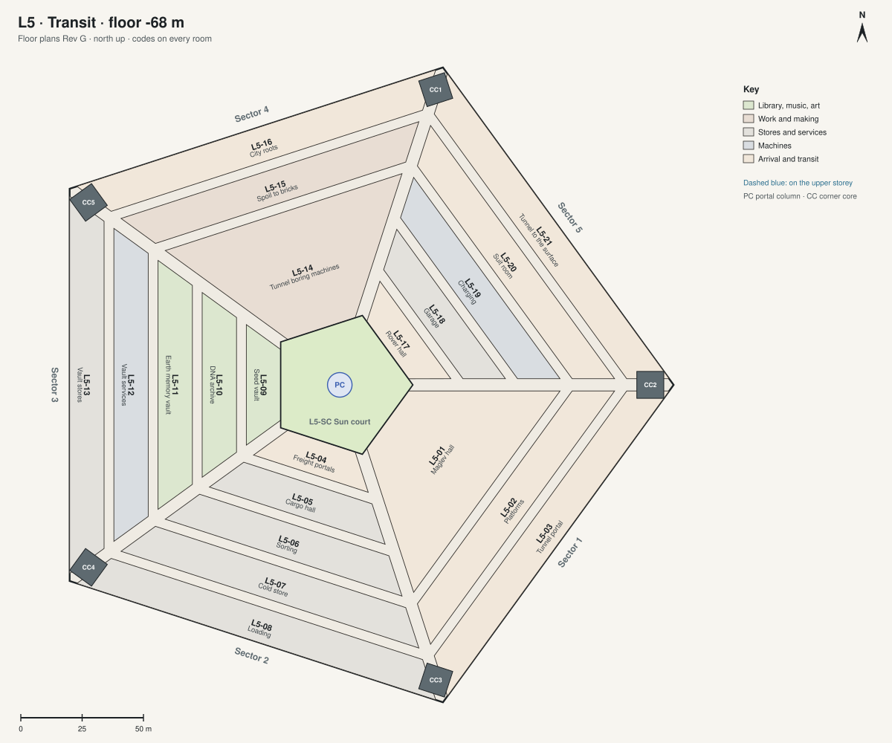

L5 · Transit floor -68 m, 8 m high
Where things arrive and leave: the maglev station, cargo, the seed vault, the tunnel works and the rovers. The sun court is at its centre.

| Code | Room | What it is for | Also | Size | Two of a kind |
|---|---|---|---|---|---|
| L5-01 | Maglev hall | The station for the maglev to the spaceport (phase 2). | 3260 m² | ||
| L5-02 | Platforms | 1650 m² | |||
| L5-03 | Tunnel portal | 2010 m² | |||
| L5-04 | Freight portals | 550 m² | |||
| L5-05 | Cargo hall | 910 m² | |||
| L5-06 | Sorting | 1280 m² | |||
| L5-07 | Cold store | 1650 m² | |||
| L5-08 | Loading | 2010 m² | |||
| L5-09 | Seed vault | Seeds of Earth's plants, kept for centuries. | 550 m² | L2-10 Seed store | |
| L5-10 | DNA archive | 910 m² | |||
| L5-11 | Earth memory vault | The sealed copy of the Archive of Earth. | 1280 m² | L1-28 Archive of Earth | |
| L5-12 | Vault services | 1650 m² | |||
| L5-13 | Vault stores | 2010 m² | |||
| L5-14 | Tunnel boring machines | They dig the city's tunnels. | 3260 m² | ||
| L5-15 | Spoil to bricks | 1650 m² | |||
| L5-16 | City roots | The start of the tunnels to the city. | 2010 m² | ||
| L5-17 | Rover hall | 550 m² | |||
| L5-18 | Garage | 910 m² | |||
| L5-19 | Charging | 1280 m² | |||
| L5-20 | Suit room | Suits for going out by rover through the tunnel. | The second way out of Arcadia. | 1650 m² | C-01 Suit room |
| L5-21 | Tunnel to the surface | 2010 m² |
Shared on this level: L5-AT atrium terrace; L5-BR bridges; L5-PC portal column; L5-ST streets; L5-AV avenues; L5-CC corner cores; CC1 to CC5 the corner cores.